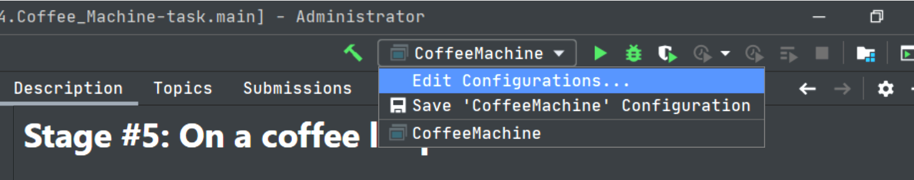
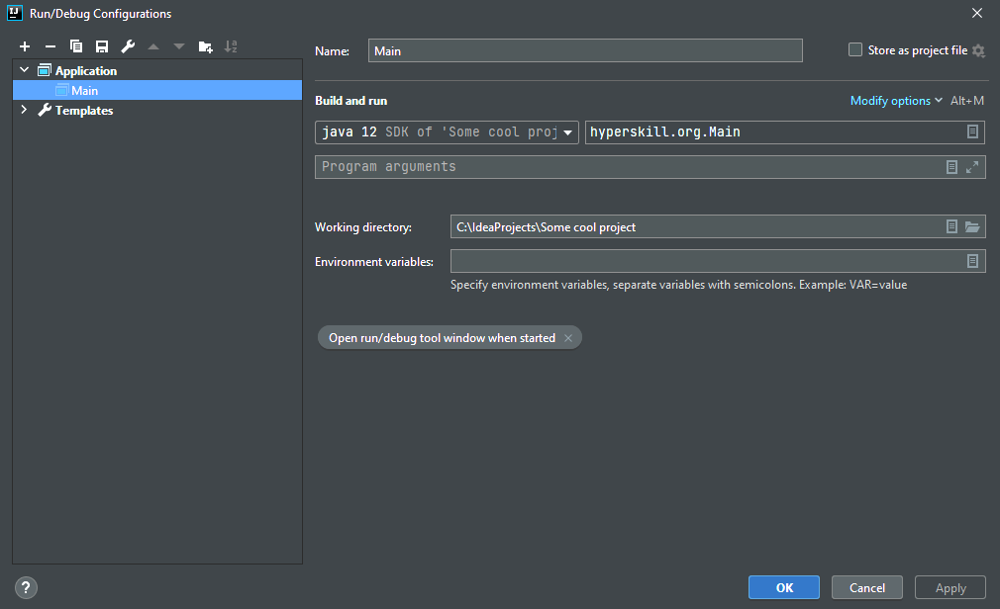

IntelliJ IDEA Конфігурація запуску
Теорія
IntelliJ IDEA використовує конфігурації запуску/налагодження для запуску, налагодження та тестування програм. Конфігурація запуску/налагодження представляє набір властивостей запуску, таких як параметри VM або JRE, які використовуються для запуску програми. Він також містить інформацію про аргументи командного рядка, які ви передаєте програмі під час запуску.
§1. Діалогове вікно налаштувань Run/Debug (запуску/налагодження)
Конфігурація Run/Debug програми дає змогу запускати або налагоджувати програми за допомогою основного методу. Щоб налаштувати конфігурацію, відкрийте діалогове вікно Edit Configurations (Редагувати конфігурації).
Аргументи командного рядка, які передаються під час запуску програми, налаштовуються в розділі Build and run (Побудувати та запустити) в полі Program arguments (Аргументи програми).
Аргументи передаються як послідовність рядків, розділених пробілами. Під час виконання програми рядки будуть аргументами командного рядка, що передаються до її точок входу. Роздільниками між елементами командного рядка є пробіли, а роздільниками в кінці рядка є символ нового рядка.
§2. Передача аргументів у конфігурації
Щоб передати аргументи програмі, вам слід ввести їх список у форматі, який ви використовували б у командному рядку. Пробіли будуть аналізуватися як роздільники, що відокремлюють один аргумент від іншого. Ці аргументи будуть передані до точки входу програми у вигляді масиву.
Важливо пам'ятати, що всі аргументи командного рядка передаються як рядки, тому, якщо вони мають розглядатися як, наприклад, цілі числа, вам слід конвертувати їх явно всередині програми.
Щоб правильно передати аргументи, слід скористатися списком правил у наступному параграфі.
§3. Правила передачі аргументів
Вказуючи аргументи, дотримуйтеся таких правил:
- Використовуйте пробіли для розділення окремих аргументів, наприклад, --data text.txt.
- Якщо аргумент містить пробіли, візьміть пробіли або аргумент, який містить пробіли, у подвійні лапки, наприклад, some" "arg або "some arg".
- Якщо аргумент містить подвійні лапки (як частину аргументу), виключіть подвійні лапки за допомогою зворотних скісних рис, наприклад, \"quoted_value\".
Наприклад, якщо ви хочете передати два аргументи, --data та text.txt, вам слід вставити їх, як у наступному прикладі, використовуючи наведені вище правила:

§4. Висновок
Давайте нагадаємо собі, чого ми навчилися в цій темі:
- Щоб передати аргументи командного рядка для вашої програми в IntelliJ IDEA, перейдіть до діалогового вікна Run/Debug configurations (Налаштування запуску/налагодження) та встановіть поле Program arguments (Аргументи програми).
- Щоб правильно вказати аргументи командного рядка, дотримуйтеся правил із третього параграфу.
Ви також можете переглянути Урок на hyperskill.org.
Практичні завдання та відповіді
Подаються завдання та варіанти відповідей. Правильний варіант виділено синім кольором.
№1. Зверніть увагу на правила
Запитання: Установіть відповідність між пропущеним рядком аргументів і фактичними аргументами. Ми вказали їх у квадратних дужках.
Установіть відповідність між елементами в лівому та правому стовпцях:
- --data "Commander Android" Soong - [--data] [Commander Android] [Soong]
- --data" "Commander Android Soong - [--data Commander] [Android] [Soong]
- --data Commander Android \"Soong\" - [--data] [Commander] [Android] ["Soong"]
- --data "Commander" Android Soong - [--data] [Commander] [Android] [Soon]
Пояснення. Правильна відповідність рядка передачі аргументів і фактичних аргументів:
Передача рядка аргументів | Фактичні аргументи
- --data "Commander Android" Soong | --data, Commander, Android, Soong
- --data" "Commander Android Soong | --data, Commander, Android, Soong
- --data Commander Android \"Soong\" | --data, Commander Android, Soong
- --data "Commander" Android Soong | --data, Commander, Android, "Soong"
Параметр --data приймає рядок як аргумент. Рядок може містити будь-які символи, включаючи пробіли, коми та лапки. Якщо рядок містить пробіли або коми, їх потрібно екранувати за допомогою подвійних лапок.
Наприклад, наступні два рядки аргументів еквівалентні:
- --data "Commander Android Soong"
- --data Commander Android \"Soong\"
У першому рядку пробіл між «Commander» і «Android» виділено подвійними лапками. У другому рядку пробіл не екранується, але лапки є.
Наведені нижче два рядки аргументів не є еквівалентними:
- --data Commander Android Soong
- --data Commander, Android, Soong
Перший рядок має лише три аргументи, тоді як другий рядок має чотири аргументи. Четвертий аргумент у другому рядку - кома між "Android" та "Soong".
№2. Яка вкладка?
Питання: Де можна знайти аргументи командного рядка програми в діалоговому вікні конфігурації Run/Debug?
Виберіть один варіант зі списку:
- Вкладка Logs
- Вікно Before launch
- Вкладка Code Coverage
- Вкладка Configuration ✔
Пояснення. Правильним варіантом є вкладка Configuration (Конфігурація). У діалоговому вікні конфігурації Run/Debug (Запуск/налагодження) параметри командного рядка програми розташовані на вкладці Configuration в полі Program arguments (Аргументи програми). Вкладка Logs (Журнали) відображає вихідні дані програми, включаючи будь-які помилки та попередження. Вікно Before launch (Перед запуском) дозволяє запускати спеціальні команди перед запуском програми. На вкладці Code Coverage (Покриття коду) показано, скільки коду виконується під час виконання програми.
№3. Передайте кілька аргументів
Питання: Уявіть, що у вас є програма, яка читає вміст текстових файлів і записує його в консоль. Вона приймає імена файлів через аргументи командного рядка. Які аргументи будуть передані програмі, якщо вам потрібно вивести вміст файлів example.txt та implementation.txt, що знаходяться в кореневій папці програми, а вміст файлу example.txt має бути першим?
Введіть короткий текст: example.txt implementation.txt ✔
Пояснення. Аргументи, які вам потрібно буде передати програмі, щоб вивести вміст файлів example.txt та implementation.txt, що знаходяться в кореневій папці програми, із вмістом файлу example.txt по-перше, буде:
example.txt implementation.txt
Вам потрібно розділити назви файлів пробілами. Потім програма зчитує вміст файлів у вказаному вами порядку та записує їх на консоль. Вміст example.txt буде першим, а потім вміст implementation.txt.
Ось приклад того, як можна запустити програму в системі на основі Unix:
$ ./program example.txt implementation.txt
Це запустить програму під назвою program і передасть імена файлів example.txt та implementation.txt як аргументи командного рядка. Потім програма зчитує вміст файлів і записує їх на консоль.
№4. Визначте аргументи
Питання: Ви передаєте програмі такий рядок як список аргументів: "sys\"\" \"path" Які будуть аргументи?
Виберіть один варіант зі списку:
- "sys path
- " sys path
- sys "path
- sys"" "path ✔
Пояснення. Правильна відповідь - sys"" "path. Рядок "sys"" "path" взято в подвійні лапки. Це означає, що пробіли між словами "sys", """, "path" інтерпретуються як буквальні пробіли, а не як роздільники між аргументами. Таким чином, аргументи, які передаються програмі, це "sys", """, і "path". Інші варіанти є неправильними, оскільки не враховують пробіли між словами в рядку. Наприклад, параметр "sys path" розділить рядок на два аргументи: "sys" і "path". Опція "sys "path" також розбиває рядок на два аргументи, але першим аргументом буде "sys", який не є дійсним аргументом. Опція "sys" "path" розбиває рядок на три аргументи: "sys", """ та "path". Однак другим аргументом буде """, який не є дійсним аргументом.
№5. Підрахувати аргументи
Питання: Скільки аргументів передається програмі через рядок нижче?
--text-files task.txt output_for"Task"_lines.txt --folder-name "Мої теми"
Введіть число: 5 ✔
Пояснення. Існує п'ять аргументів, які передаються програмі через рядок нижче:
--text-files task.txt output_for"Task"_lines.txt --folder-name "My topics"
Аргументи:
- --text-files: Це параметр, який визначає текстові файли, які програма має обробити.
- task.txt: це назва першого текстового файлу.
- output_for"Task"_lines.txt: це назва вихідного файлу для першого текстового файлу.
- --folder-name: це параметр, який визначає теку, яка містить текстові файли.
- "My topics": це назва теки, яка містить текстові файли.
За першим аргументом --text-files слідує список текстових файлів. Список текстових файлів береться в подвійні лапки. Це означає, що пробіли між іменами файлів інтерпретуються як буквальні пробіли, а не як роздільники між аргументами. Таким чином, перший аргумент насправді складається з 4 аргументів в одному.
Правильний висновок полягає в тому, що програмі передано 5 аргументів.
№6. Результат
Питання: Ви передаєте аргументи 1 2 до наступної програми:
Java:
public static void main(String[] args) {
System.out.println(args[0] + args[1]);
}
Kotlin:
fun main(args: Array<String>) {
print(args[0] + args[1])
}
Яким буде результат?
Виберіть один варіант зі списку:
- 12 ✔
- Станеться виняткова ситуація IOException
- 1+2
- 3
Пояснення. Відбувається конкатенація, а не додавання!
№7. Помилки Чарльза
Запитання: Ваш колега Чарльз намагається передати такі аргументи: --data Emma Rodolphe "Leon" до такої програми:
--data" "Emma, Rodolphe, /"Leon/"
Але йому це не вдається, і він стає сумним. Допоможіть йому знайти та виправити свої помилки та зробіть Чарльза щасливим.
Виберіть один або кілька варіантів зі списку:
- непотрібні подвійні лапки між --data та Emma ✔
- навколо Leon замість зворотних похилих рисок ✔
- зайва кома після Emma та Rodolphe ✔
- непотрібні зворотні косі риски навколо Leon
- без коми після --data
Пояснення. Нижче наведено помилки, яких Чарльз припустився під час свого командування:
- Він використовував подвійні лапки замість одинарних навколо Leon. Одинарні лапки використовуються для передачі аргументів, які містять пробіли або спеціальні символи, наприклад лапки.
- Він використовував косі риски замість зворотних навколо Leon. Зворотні косі риски використовуються для екранування спеціальних символів у командних рядках Windows.
- Він поставив кому після Rodolphe. Коми в аргументах команди не допускаються.
Щоб виправити свої помилки, Чарльзу слід використати таку команду:
--data "Emma, Rodolphe, \"Leon\""
Ця команда правильно передасть програмі аргументи "Emma", "Rodolphe" і "Leon".
Ось розбивка команди:
- Параметр --data повідомляє програмі, що наведені нижче аргументи є даними.
- Подвійні лапки навколо "Emma, Rodolphe та "Leon"" використовуються для передачі аргументів як один рядок.
- Зворотні скісні риски навколо "Leon" використовуються для того, щоб уникнути лапок у рядку.
- Кома після Rodolphe заборонена, тому її слід видалити.
№8. Configuration-in-itself
Питання: Що представляє конфігурація run/debug (запуску/налагодження)?
Виберіть один варіант зі списку:
- лише аргументи командного рядка, які ви передаєте програмі під час запуску
- Параметри віртуальної машини Java для кращої продуктивності та налагодження
- набір властивостей запуску: параметри JVM або JRE, аргументи командного рядка ✔
- команди для "run" та "debug"
Пояснення. Конфігурація run/debug (запуску/налагодження) — це набір властивостей запуску, що включає параметри JVM або JRE, аргументи командного рядка та інші параметри конфігурації, які визначають, як програма має запускатися чи налагоджуватися. Він використовується для визначення середовища, у якому має бути запущено програму, і може включати такі параметри, як головний клас, який потрібно виконати, аргументи програми та змінні середовища. Ця конфігурація також може містити параметри віртуальної машини Java для кращої продуктивності та налагодження. Тому правильна відповідь:
набір властивостей запуску: параметри JVM або JRE, аргументи командного рядка
№9. Війна і мир
Запитання: Уявіть, що вам потрібно передати програмі такі три аргументи: L. Tolstoy, "War and peace", 1867. Як правильно їх записати в поле аргументів?
Виберіть один варіант зі списку:
- L. Tolstoy \"War and peace\" 1867
- L. Tolstoy "\"War" and "peace"\" 1867
- "L. Tolstoy" "\"War and peace\"" 1867 ✔
- L. Tolstoy "War and peace" 1867
Пояснення. Правильний спосіб запису аргументів у полі аргументу:
Л. Толстой "\"Війна і мир\"" 1867
Рядковий літерал для назви книги потрібно взяти в подвійні лапки. Одинарні лапки не працюватимуть, оскільки пробіл між словами "Війна" та "і" сприйматиметься як роздільник.
Наданий вами код виводить таке:
L. Tolstoy "\"War and peace\"" 1867
Це неправильно, оскільки назву книги не взято в подвійні лапки.
Ось приклад того, як ви можете використовувати аргументи в програмі Java:
Приклад
public class PrintArguments {
public static void main(String[] args) {
printArguments("L. Tolstoy", "\"War and peace\"", 1867);
}
public static void printArguments(String author, String book, int year) {
System.out.println(author);
System.out.println(book);
System.out.println(year);
}
}
Цей код визначає функцію під назвою print_arguments(), яка приймає три аргументи: ім’я автора, назву книги та рік видання. Потім функція виводить ці аргументи на консоль.
Після виконання цього коду на консолі буде виведено такий вихід:
L. Tolstoy War and peace 1867
№10. Складне запитання
Питання: передайте програмі аргумент "Bolek_and_Lolek".
Підказка: все є частиною параметра, включаючи подвійні лапки.
Введіть короткий текст: \"Bolek_and_Lolek\" ✔
Що таке конфігурації запуску IntelliJ IDEA?
Конфігурації запуску IntelliJ IDEA – це набір налаштувань, які визначають спосіб запуску проєкту. Параметри можуть включати наступне:
- Програма, яку потрібно запустити
- Аргументи командного рядка
- Змінні середовища
- Інші налаштування, як-от налагоджувач (дебагер)
Конфігурації запуску можна використовувати для запуску проєктів на локальному комп’ютері, віддаленому сервері або в контейнері Docker. Їх також можна використовувати для запуску проєктів у різних середовищах, таких як розробка, тестування та виробництво.
Щоб створити нову конфігурацію запуску, відкрийте діалогове вікно Run/Debug Configurations (Ctrl+Shift+F10) і натисніть кнопку «+». У діалоговому вікні New Run Configuration (Нова конфігурація запуску) виберіть тип програми, яку потрібно запустити.
Створивши конфігурацію запуску, ви можете редагувати її, двічі клацнувши її в діалоговому вікні Run/Debug Configurations. Ви також можете запустити проєкт із конфігурації запуску, натиснувши зелену стрілку поруч із ним.
Ось кілька прикладів того, як можна використовувати конфігурації запуску в IntelliJ IDEA:
- Ви можете створити конфігурацію запуску для запуску програми Java із певними аргументами командного рядка.
- Ви можете створити конфігурацію запуску для запуску вебпрограми на локальному вебсервері.
- Ви можете створити конфігурацію запуску для запуску програми Python у контейнері Docker.
Конфігурації запуску — це потужний інструмент, який можна використовувати для запуску проєктів на різних платформах і в різних середовищах.
Ось деякі додаткові речі, які слід знати про конфігурації запуску в IntelliJ IDEA:
- Ви можете створити кілька конфігурацій запуску для одного проєкту. Це може бути корисним, якщо ви хочете запустити проєкт різними способами, наприклад з різними аргументами командного рядка або змінними середовища.
- Ви можете зберегти конфігурації запуску як файли проєкту. Це дозволяє ділитися ними з іншими розробниками або імпортувати їх в інші проєкти.
- Ви можете запустити конфігурацію запуску за допомогою комбінації клавіш. Це може бути корисним, якщо ви часто запускаєте ту саму конфігурацію запуску.
Ось деякі з різних типів конфігурацій запуску, доступних у IntelliJ IDEA:
- Application: цей тип конфігурації запуску використовується для запуску окремої програми.
- JUnit: цей тип конфігурації запуску використовується для запуску тестів JUnit.
- TestNG: цей тип конфігурації запуску використовується для запуску тестів TestNG.
- Spring Boot: цей тип конфігурації запуску використовується для запуску програми Spring Boot.
- Docker: цей тип конфігурації запуску використовується для запуску контейнера Docker.